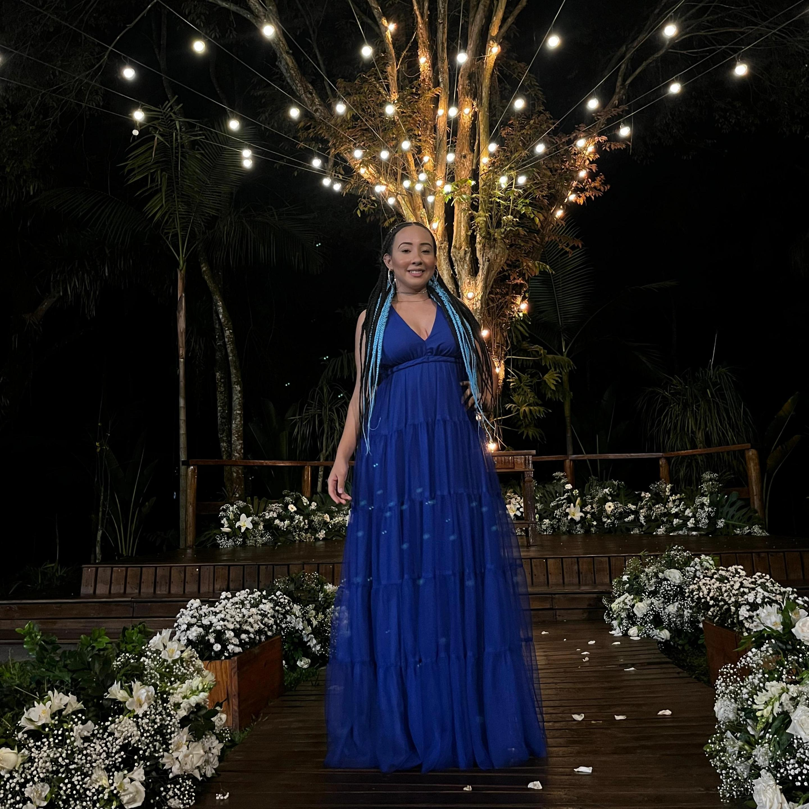

Olá meu nome é
Tayna dos Santos
sou uma desenvolvedora em formação
Olá meu nome é Tayna dos Santos sou estudante da FATEC FERRAZ DE VASCONCELOS e estou cursando Análise e Desenvolvimento de Sistemas.Tenho interesse em atuar nas áreas de full-stack ou front-end, banco de dados e engenharia de software e venho me aprofundando nas linguagens JAVA, MySql e na parte de front-end (HTML, CSS, JAVASCRIPT). Sou muito dedicada, proativa, focada e tenho experiência com trabalho em grupo.
